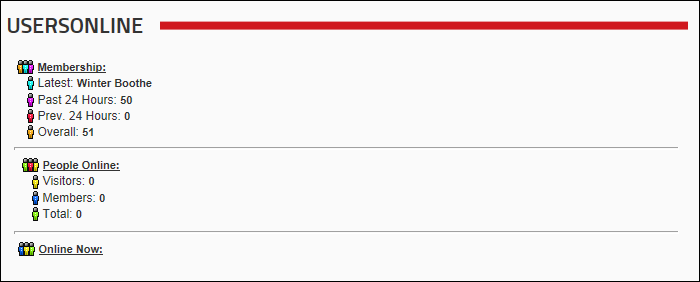
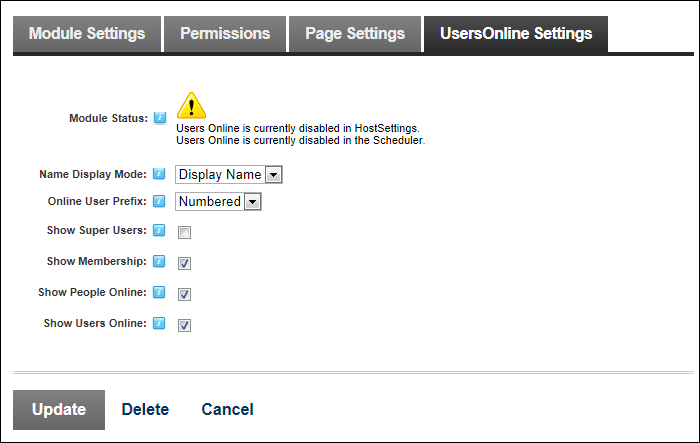
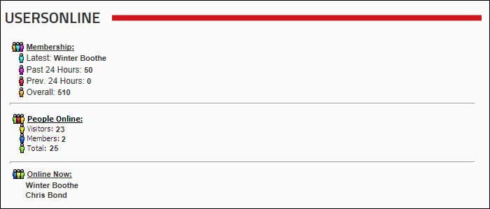
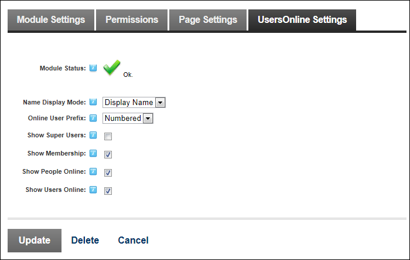

The Users Online module can be set to display Membership, People Online and Online Now details however it must be enabled and configured by a SuperUser before all of this information can be accessed by DNN.
The Users Online module can still be added to a page before it is enabled however the only Membership information is displayed.

The following messages are displayed on the UsersOnline Settings page of all Users Online modules if the module is disabled:

Once the Users Online module has been enabled the People Online and Online Now information are also displayed.

In addition, the OK message is displayed on the UsersOnline Settings page.
